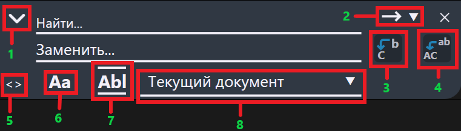
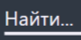
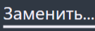
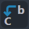
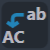
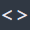
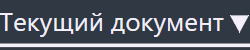

Окно поиска
Окно поиска помогает быстро находить и (при необходимости) заменять слова и фразы в тексте. Можно искать в текущем документе, во всех открытых документах или в выбранном файле, а также учитывать регистр и искать только цельные слова.
На рисунке изображено окно поиска:

Внимание!
Обведённое красным в дальнейшем будут называться блоками
(Блок №1, Блок №2 и т.д.). Каждый из них представляет какой-либо функционал окна
поиска.
Из чего состоит окно
| Элемент | № блока | Что делает |
|---|---|---|
|
 |
- | Введите слово или фразу, которую хотите найти. |
|
 |
- | Слово или фраза, на которую нужно заменить найденный текст. |
| или | 1 | Открывает/скрывает блок замены. Если развернуть, появится поле «Заменить…» и кнопки замены. |
| 2 |
Переход к найденному вхождению.
|
|
|
 |
3 | Заменяет текущее вхождение на слово, вписанное в поле «Заменить…». |
|
 |
4 | Заменяет все вхождения на слово, вписанное в поле «Заменить…». |
|
 |
5 | Перемещение окна. Наведитесь на него мышку и зажмите ЛКМ, чтобы сдвинуть окно поиска по горизонтали. |
| 6 | Учитывать регистр - различает большие/маленькие буквы (например, «Ток» и «ток»). | |
| 7 | Слово целиком — ищет только отдельные слова (не будет находить «ток» внутри «поток»). | |
|
 |
8 |
Область, где искать слово:
|
Как пользоваться
- Найти слово/фразу: откройте окно поиска, введите текст в «Найти…», жмите стрелки «вверх/вниз» (или Enter) для перехода между результатами.
- Заменить: разверните окно (кнопка со стрелкой), введите текст в «Заменить…», нажмите «Заменить» (одно вхождение) или «Заменить всё».
- Поменять область поиска: выберите в списке «Где искать» — текущий документ, все открытые или конкретный файл.
- Уточнить результаты: включите «Учитывать регистр» и/или «Слово целиком», если нужно точнее подобрать совпадения.
Подсказки
- Окно аккуратно выезжает сверху и не мешает работать с текстом; его можно перетащить в удобное место.
- Если результаты «пропадают», попробуйте выключить параметр «Слово целиком» или «Учитывать регистр».